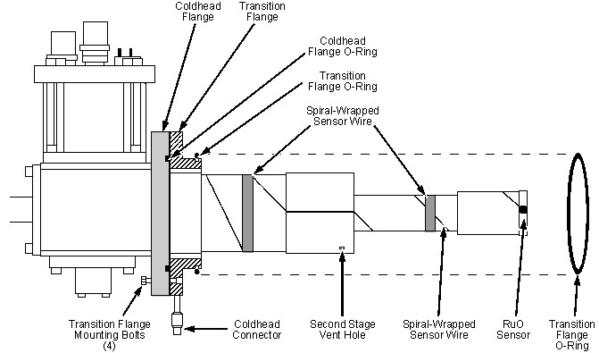

Items identified in the illustration must be present and installed approximately where shown.
RuO sensor must be securely mounted in area shown.
RuO wire wrapping may be slightly different than the configuration shown. Make sure the RuO sensor wires are not broken or disconnected, the insulation is intact, and the tape/clamps are secure.
Illustration 36: Coldhead O-Ring Placement
